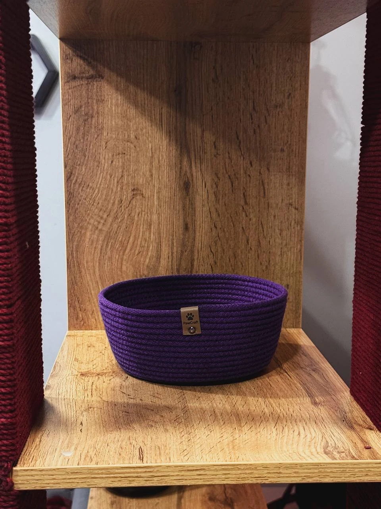
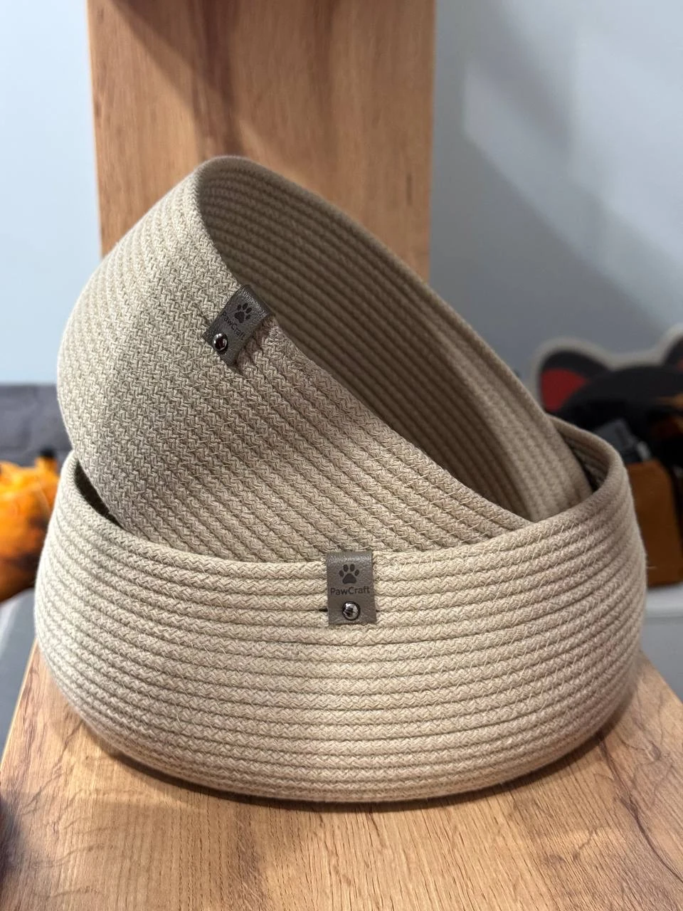
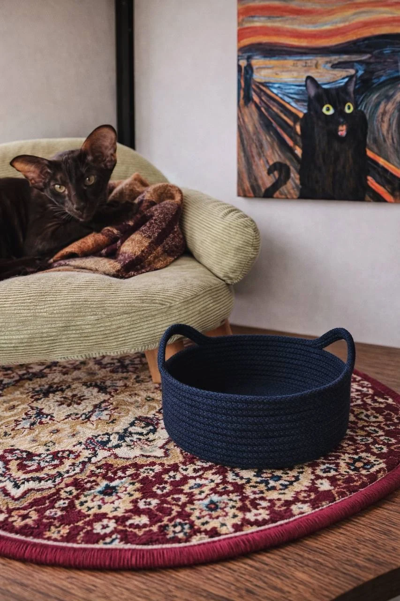
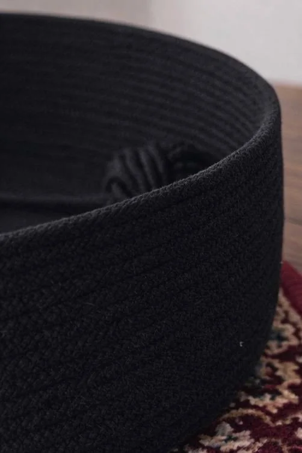
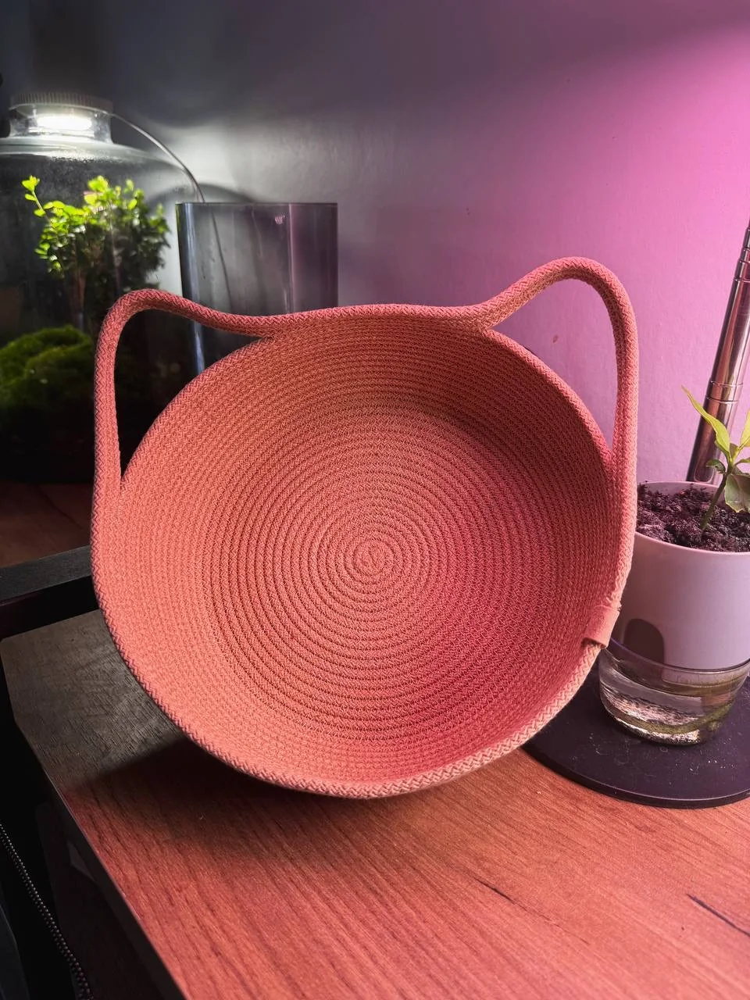
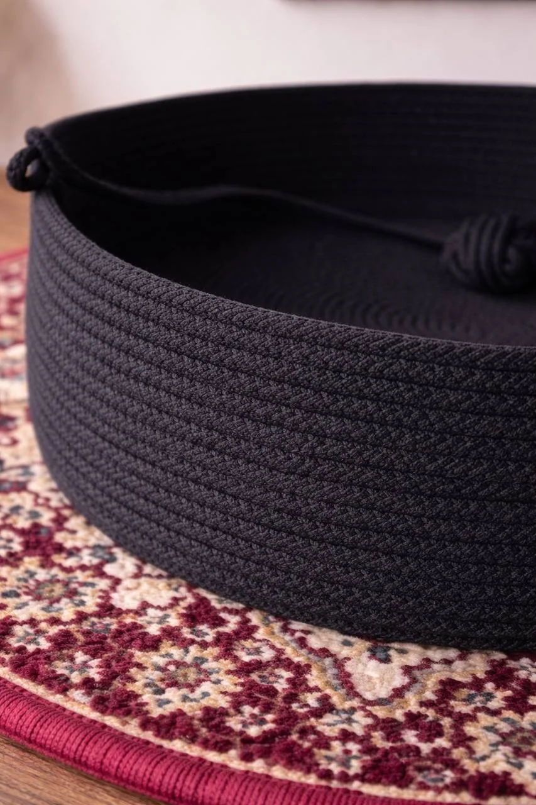

Для дома и важных мелочейКорзинки
Корзинки
PawCraft
Аккуратные корзинки из хлопкового шнура для игрушек, аксессуаров и хранения. Доступны модели с ручками и без них.
Подобрать оттенок
Размеры
Мини-корзинки
Цвет и исполнение можно подобрать под интерьер. Стоимость зависит от размера.
15 × 5 смКомпактная750 ₽
17 × 7 смСредняя1 000 ₽
Самый популярный20 × 10 смВместительная1 250 ₽
Варианты исполнения
Корзинки разных форм
Без лишней мешанины: три наглядных примера и ещё несколько вариантов для сравнения.





Как заказать
Свяжитесь с нами
Укажите желаемый размер, цвет и вариант исполнения. Мы свяжемся с вами и подтвердим детали.
Обсудить нюансы в Telegram →Связаться удобным способом
Напишите нам о корзинке. Можно сразу указать желаемые размер, форму и цвет.
Индивидуальный заказ
Подберём размер и оттенок
Расскажите, что планируете хранить и где будет стоять корзинка. Поможем выбрать подходящий вариант.